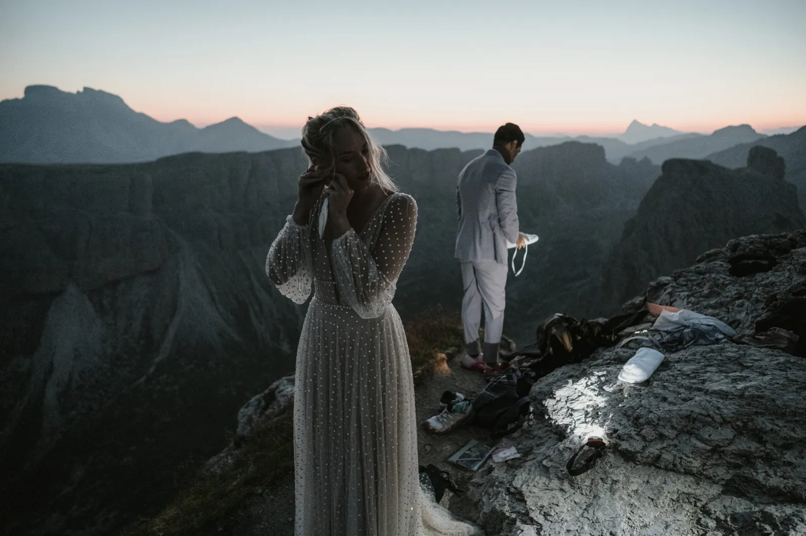
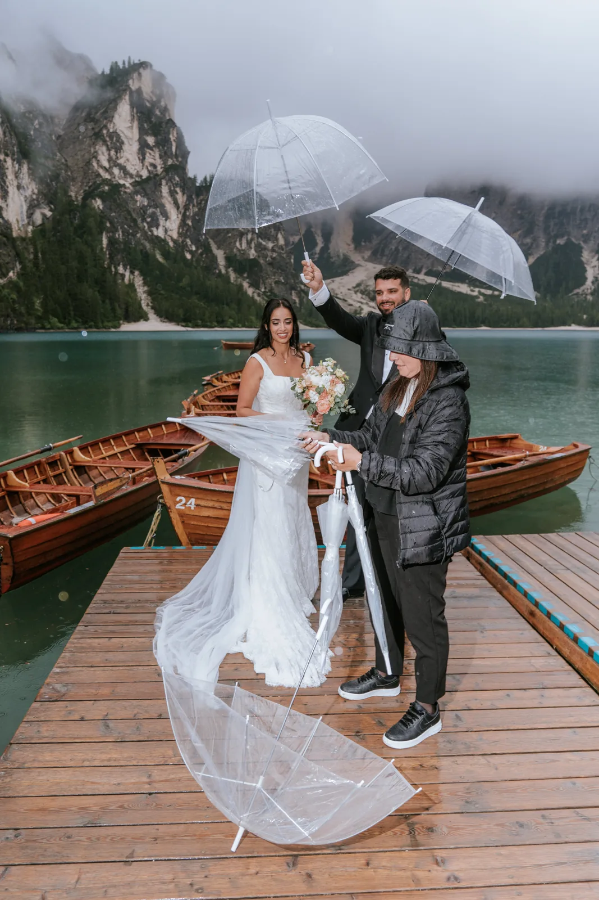
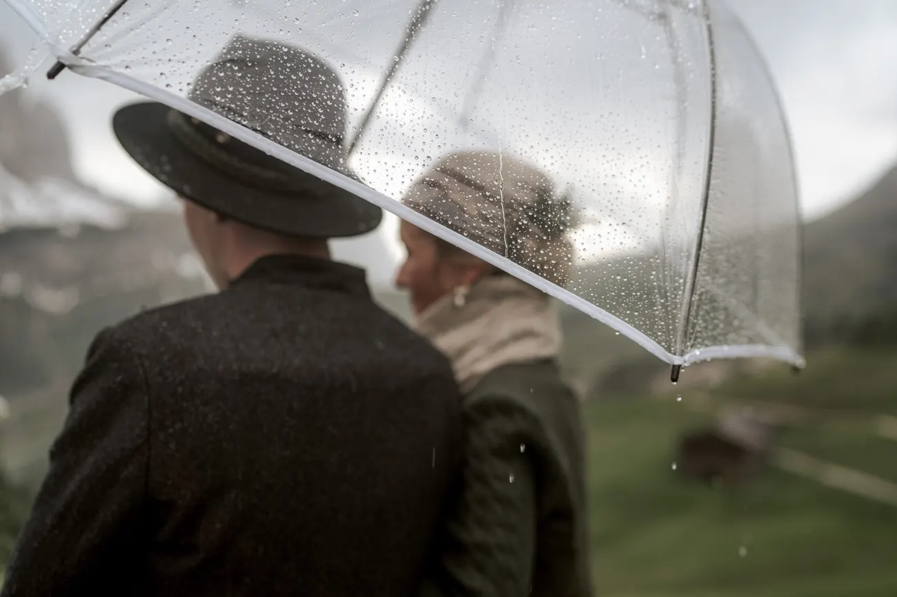
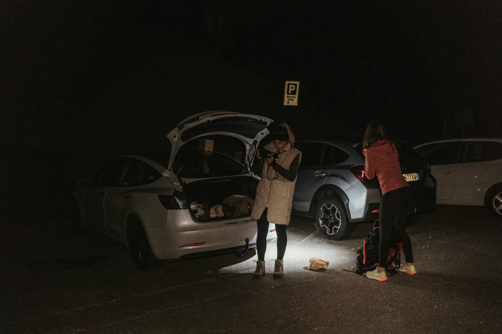
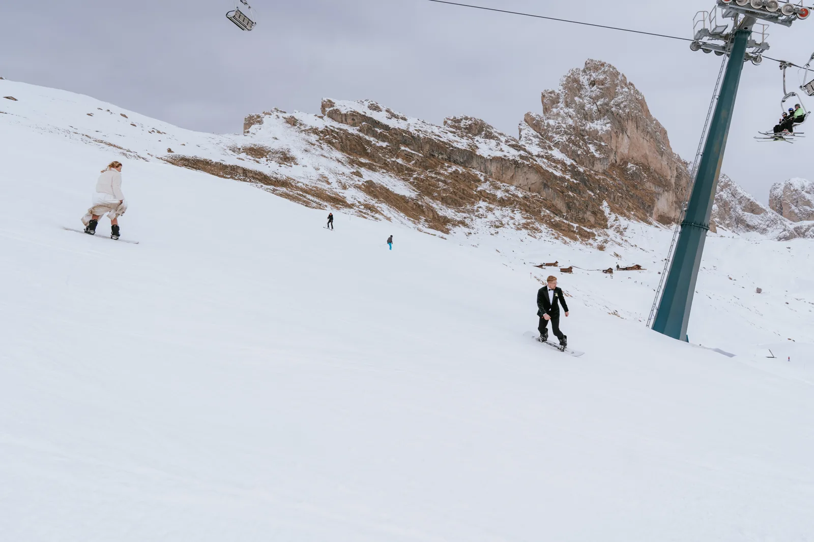
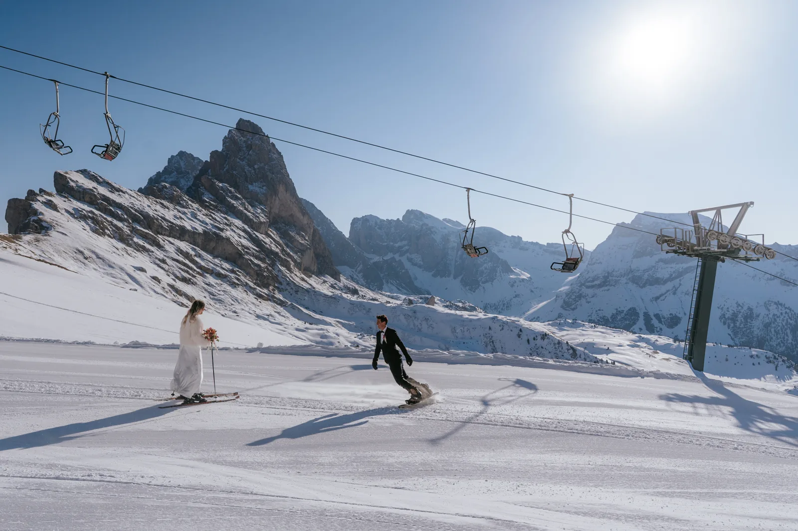

Die großen Entscheidungen — wo, wann, was es kostet — sind der leichte Teil. Es sind die kleinen, unglamourösen Details, die einen Berghochzeitstag still gelingen oder scheitern lassen, und keine Checkliste erwähnt sie. Nach Jahren, in denen wir Paare in den Alpen begleitet haben, in Regen und Wind und Drei-Uhr-früh-Dunkelheit, sind das die Dinge, die uns jemand zuerst hätte sagen sollen. Nichts davon ist beängstigend. Alles davon ist der Unterschied zwischen einem Tag, den ihr übersteht, und einem, von dem ihr nie aufhört zu erzählen.
Wenn ihr aus diesem ganzen Guide eine Sache mitnehmt, dann diese: Kälte, Blasen und Hunger zeigen sich immer auf den Bildern. Nicht offensichtlich — im Zug eines Kiefers, einer hochgezogenen Schulter, einem Lächeln, das die Augen nicht ganz erreicht. Die Paare, die den ganzen Tag strahlen, sind fast immer die, die ein zweites Paar echte Schuhe für den Weg eingepackt haben, warme Schichten für unter den Mantel, Wasser, einen Snack und Handwärmer. Die schönen Schuhe wandern in den Beutel und kommen fürs Gelübde heraus. Niemand hat je bereut, an seinem Hochzeitstag warm und satt zu sein.


Deshalb hetzen wir euch auch nie einen Berg hinauf. Wir erkunden die Route vorab, tragen das Schwere und dosieren den Weg so, dass ihr mit Atem übrig ankommt statt rot und zitternd. Ein wenig Planung — die richtigen Schuhe, eine warme Schicht, eine Hütte mit Küche oben — macht den Weg zum Teil des Abenteuers statt zu dem, wovor ihr euch gefürchtet habt. Und wenn ihr euch wohlfühlt, vergesst ihr die Kamera — und genau dann entstehen die echten Bilder.

Alle planen für Sonne und fürchten das Grau. Wir würden das sanft umdrehen. Einige der schönsten, bewegendsten Bilder, die wir je gemacht haben, kamen aus Regen, Nebel und Wind — Wolken, die über einen Grat quellen, ein Schleier in der Böe, zwei Menschen, die unter einem geteilten Schirm lachen, weil es nichts anderes zu tun gibt. Schlechtwetter reduziert einen Tag auf das, was wirklich zählt: ihr zwei, nah, ein wenig trotzig, ganz da. Wir kommen vorbereitet mit durchsichtigen Schirmen und Tüchern und fürchten keinen stimmungsvollen Himmel. Ihr solltet es auch nicht.


Der Wind ist ein eigener Charakter. Er hebt Schleier und Kleid zu etwas Lebendigem, und eine Wiese in steifer Brise fotografiert sich wie ein Gemälde — aber er ist kalt und stiehlt Worte, wir wählen fürs Gelübde also geschützte Plätze und lassen die ausgesetzten Grate den Porträts. Die ehrliche Regel lautet: Wir sagen wegen Wetter nie ab, wir weichen ihm aus. Ein Reservetag, in den größeren Paketen eingebaut, heißt, wir können einen Sturm aussitzen oder eine Aufklarung jagen. Die Vorhersage ist ein Vorschlag, kein Urteil — und der Berg liest sie ohnehin selten.

Niemand warnt euch, wie früh ein Sonnenaufgangs-Elopement beginnt. Haare und Make-up können um drei oder vier Uhr früh starten; der Aufstieg ist oft im Dunkeln, mit Stirnlampe, das Tal schläft unter euch. Es klingt hart, und für etwa zwanzig Minuten ist es das. Dann beginnt der Himmel sich zu regen, ihr erreicht den Ort, und die ganze Welt gehört euch allein — keine Tagesgäste, keine Schlange am Aussichtspunkt, nur das erste Licht, das den Fels erklimmt, während ihr eure Worte sprecht. Wenn alle anderen kommen, steigt ihr längst zum Frühstück ab, verheiratet.


Wir tragen die ganze Logistik, damit ihr nicht denken müsst: den Weckruf, das rückwärts von der Sonnenaufgangs-Minute gerechnete Timing, die Route, die wir bei Tageslicht bereits gegangen sind, Ersatzschichten für die kalte Stunde vor der Sonne. Ihr müsst nur dem Wecker vertrauen und verschlafen erscheinen. Und wenn euch das gar nicht reizt — wenn ihr lieber ausschlaft und zur goldenen Stunde ein Glas hebt —, schenkt euch ein Sonnenuntergangs-Elopement dasselbe leere, glühende Licht zu einer weit zivileren Tageszeit. Es gibt keine falsche Antwort, nur die, die zu euch passt.
Eine Kleinigkeit, die mehr zählt, als sie klingt: Schreibt euer Gelübde vorab und bringt eine gedruckte Kopie mit. Handydisplays sterben in der Kälte genau im falschen Moment, und von Papier zu lesen, das ihr wirklich in zitternden, glücklichen Händen halten könnt, ist ohnehin Teil der Erinnerung. Dann schützt den Tag ein wenig. Postet nicht den genauen Ort oder den Plan; stellt für die Zeremonie die Handys stumm; bittet Gäste, präsent zu sein statt zu filmen. Je weniger an eurer Aufmerksamkeit zerrt, desto mehr gehört der Tag euch.
Die andere Hälfte, den Moment zu schützen, ist Zeit. So viele Tage wirken gehetzt, nicht weil zu wenig davon da war, sondern weil niemand Spielraum ließ. Wir planen großzügige Puffer in jede Stunde — Zeit zum Durchatmen am Grat, Zeit, eine vom Wind verwehte Haarsträhne zu richten, Zeit, einfach dazustehen und zu begreifen, dass es geschehen ist. Wenn ein Ablauf Luft hat, hören die kleinen Katastrophen auf, welche zu sein: eine verpasste Gondel, eine falsche Abzweigung, ein plötzlicher Schauer werden zu Fußnoten statt zu Dramen. Raum im Plan ist der stille Luxus, nach dem euch niemand zu fragen rät.
Eine Handvoll unglamouröser Fakten, die echten Ärger sparen. Nehmt etwas Bargeld mit — einige der Mautstraßen und Parkplätze, die Drei-Zinnen-Straße und der Braies-Parkplatz darunter, sind damit reibungsloser, und manche Hüttenküchen bevorzugen es noch. Prüft die letzte Talfahrt der Gondel, ehe ihr euch für einen Sonnenuntergang hoch oben entscheidet, denn im Dunkeln in der Höhe zu stranden ist eine Geschichte, die ihr nicht wollt. Denkt daran, dass der Pragser Wildsee im Sommer ab dem späten Vormittag für den Verkehr schließt, wir fotografieren ihn also davor oder danach. Und packt selbst im August eine warme Schicht: Ein Gipfel im ersten Licht ist wirklich kalt, was auch immer das Talthermometer sagt.

Und eine, die überhaupt niemand erwähnt: Ihr seid selten die Einzigen am Berg. Ein Wanderer streift durch den Hintergrund, ein Skifahrer quert den Hang hinter euch, eine Gondel summt über euch. Das ist kein Problem — es ist ehrlich, und wir wissen damit umzugehen: der richtige Winkel, die richtige Minute, die stille Ecke fünf Schritte neben dem Hauptweg. Ein Teil dessen, wofür ihr zahlt, ist jemand, der genau weiß, wann sich der Aussichtspunkt leert und wie man euch an einem öffentlichen Ort Privatheit gibt. Der Berg ist geteilt; euer Moment muss sich nicht so anfühlen.
Ein paar frühe Entscheidungen senken still die Rechnung. Bucht die Hütte und, wenn ihr in Österreich rechtsgültig heiratet, die Standesbeamtin Monate im Voraus — beides ist im Sommer begrenzt und beides wird teurer, je später ihr dran seid. Denkt an die Nebensaison: Ende Mai und Oktober sind günstiger, viel ruhiger und oft schöner als der Hochsommer, mit goldenen Lärchen oder frischem Schnee auf den Gipfeln. Und ihr braucht selten Mautstraße und Bergbahn am selben Tag — eines zu wählen hält Budget und Ablauf einfach. Wir kartieren das alles mit euch, damit das Geld dorthin geht, wo es zählt.
Ein Elopement ist keine Hochzeit ohne die Freude — es ist eine Hochzeit ohne den Lärm. Gebt dem Tag also etwas zum Feiern. Einige unserer liebsten Nachmittage endeten mit einem tragbaren Pizzaofen, der auf einer Bergwiese angefeuert wurde, einer Flasche von etwas Kaltem, kräftig geschüttelt, einem Hüttentisch, der sich unter regionalem Essen biegt. Das Gelübde ist das Herz, aber die Stunden danach sind, wo der Tag sich löst und euer wird: der Toast, das Lachen, das Essen, während die Gipfel rosa werden. Plant dafür. Eine Feier zweier Menschen ist immer noch eine Feier.


Die Bilder, die Paare am meisten schätzen, sind fast nie die sicheren. Es sind die Braut, die im Hochzeitskleid in die Ski steigt, der Bräutigam, der im Anzug einen Hang hinunterrodelt, das Paar, das in einen kalten See watet, weil das Licht zu gut war, um zu widerstehen. Wenn ihr eine leicht absurde Idee habt — etwas, das ihr insgeheim immer tun wolltet —, sagt es uns. Neun von zehn Mal machen wir es sicher und machen es möglich, und es wird zum Bild, das ihr an die Wand hängt, und zur Geschichte, die ihr euer Leben lang erzählt. Der Berg gibt euch die Erlaubnis, ein wenig wild zu sein.


Wenn ihr alles andere auf dieser Seite vergesst, behaltet dies. Es ist euer Tag, kein Fotoshooting. Jeder Tipp hier — die Snacks, die Pufferzeit, das gedruckte Gelübde, der Reservetag — existiert aus einem Grund: die kleinen Sorgen aus dem Weg zu räumen, damit ihr einfach zusammen sein könnt. Die besten Bilder, die wir je gemacht haben, kamen in den Momenten, in denen das Paar vergaß, dass wir überhaupt da waren: ein privater Scherz am Grat, ein angehaltener Atem vor dem Gelübde, eine stille Hand auf einer kalten Wange. Plant gut, dann lasst los. Um den Rest kümmern wir uns.
Ehrlich? Vielleicht das Beste, was passieren kann. Einige unserer liebsten Bilder entstehen bei grauem Himmel und Regen — Nebel, der über die Grate quillt, ein geteilter Schirm, Tropfen auf dem Schleier, Farben tief und stimmungsvoll. Wir kommen vorbereitet mit durchsichtigen Schirmen und Tüchern, und wir bauen Puffer ein, bei den größeren Paketen meist einen ganzen Reservetag, damit das Wetter den Tag nie erzwingt. Wir verfolgen die Vorhersage Stunde um Stunde und legen euch in das Fenster, das passt. Ein Berg, der in Wolken verschwindet, ist kein ruinierter Tag; er ist ein anderer, stillerer, oft schönerer.
Ja — und jede Minute wert. Eine echte Zeremonie zur Morgendämmerung kann Haare und Make-up um drei oder vier Uhr früh und einen Aufstieg im Dunkeln mit Stirnlampe bedeuten. Es klingt brutal und fühlt sich wie Magie an: Ihr habt die berühmtesten Orte ganz für euch, das erste Licht ist unwiederholbar, und wenn die Tagesgäste kommen, frühstückt ihr längst. Wir übernehmen die Logistik — das Wecken, das Timing, die Route im Dunkeln —, ihr müsst nur verschlafen erscheinen und staunend gehen. Kein Morgenmensch? Dann planen wir einen Sonnenuntergang.
Weniger Glamour, mehr Komfort, als ihr denkt. Druckt euer Gelübde — Handydisplays sterben in der Kälte im schlechtesten Moment. Packt warme Schichten für unter den Mantel, ein zweites Paar echte Schuhe für den Weg mit den schönen im Beutel, Snacks, Wasser und Handwärmer. Nehmt etwas Bargeld mit: manche Mautstraßen, Parkplätze und sogar Hüttenküchen sind damit einfacher. Kälte, Blasen und Hunger zeigen sich immer auf den Bildern und darin, wie ihr euch fühlt — das kleine, unglamouröse Gepäck hält den Tag weich.
Ein paar kleine, und wir übernehmen sie alle für euch. Manche Orte brauchen eine Foto- oder Zeremonie-Genehmigung; die Drei-Zinnen-Mautstraße kostet rund 30–45 € pro Auto; der Pragser Wildsee hat kostenpflichtige Parkplätze und ein Sommer-Zufahrtsfenster; auch Bergbahn-Tickets und eine Hüttennacht summieren sich. Nichts davon ist für sich teuer — es braucht nur jemanden, der es plant, damit euch am Tag nichts überrascht. Genau das ist unsere Aufgabe: Reservierungen, Timing, Tickets und das Bargeld, das ihr in der Tasche wollt — alles vorab geregelt.
Von niemandem bis zu einer kleinen Handvoll — meist null bis zwanzig. Der ganze Sinn eines Elopements ist Intimität, die meisten unserer Paare kommen also nur zu zweit, manchmal mit Eltern oder ein, zwei Trauzeugen. Je mehr Menschen ihr hinzufügt, desto mehr Logistik braucht ein Bergtag — Tritt, Tempo, Timing, jemand, der unten die Schuhe hütet —, wir halten es also bewusst klein. Wollt ihr eine Handvoll der liebsten Menschen mit am Berg, funktioniert das wunderbar; wir planen Weg und Timing einfach um sie herum.
Genau das vermeiden wir am hartnäckigsten. Es ist eure Hochzeit, kein Shooting — und die besten Bilder entstehen jedes Mal aus den Momenten, in denen ihr vergesst, dass wir überhaupt da sind. Wir bleiben zurückhaltend, halten Abstand, wo es zählt, und regen nur so viel an, dass ihr euch wohlfühlt. Den größten Teil des Tages seid ihr einfach zusammen: das Gelübde lesen, auf einem Grat verschnaufen, über den Wind lachen, ein Hüttenessen teilen. Alles andere planen wir um dieses eine Ziel, damit ihr euch an die Ehe erinnert, nicht an die Kamera.
Wir verwenden Cookies für anonyme Statistik (Google Analytics über Google Tag Manager), um die Website zu verbessern. Die Analyse läuft nur mit deiner Einwilligung. Datenschutz